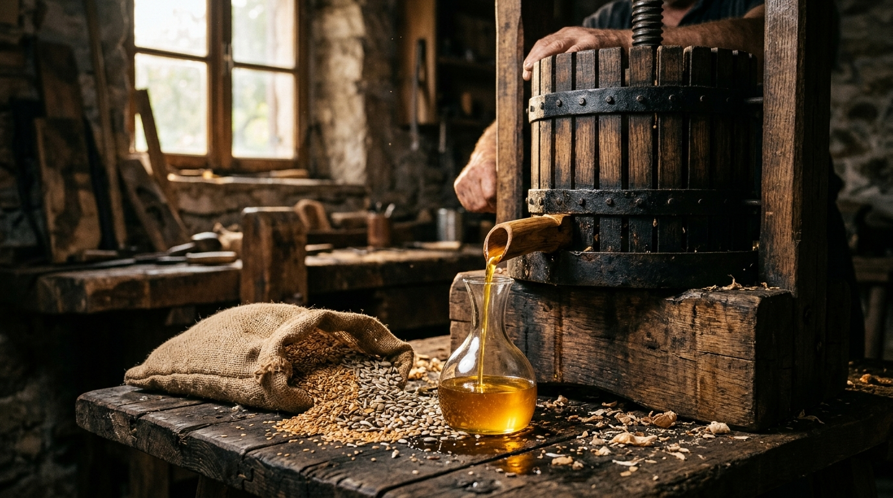

Краткий ответ: в чём физическая разница масел за 10 секунд
Большинство недорогих промышленных масел получают химической экстракцией гексаном (растворителем) с последующей щелочной рафинацией. Магазинный «холодный отжим» отжимают металлическим шнеком, где за счёт трения семена греются до 70–95°C, а контакт с железом ускоряет окисление жирных кислот. Настоящее сыродавленное масло отжимается на гидропрессе с плавным усилием 30–50 тонн (по данным производителя оборудования) в пищевом капролоновом бочонке при комнатной температуре (20–22°C): без нагрева, без растворителей и без контакта с металлом.

Бережный отжим в капролоновом бочонке под давлением гидравлики: струя чистого нерафинированного масла стекает прямо в мерный стакан без нагрева и контакта со сталью.
1. Миф о «холодном отжиме» на магазинной полке (ГОСТ и трение шнека)
Почти на каждой бутылке нерафинированного растительного масла в супермаркете красуется маркетинговая надпись «Первый холодный отжим». Большинство покупателей уверены, что семечки просто бережно сдавили, как свежий апельсин в соковыжималке.
Реальность промышленного производства устроена иначе. По техническим регламентам и ГОСТ 1129 «холодным» юридически считается любой механический отжим, при котором семена не подогревали в жаровнях перед подачей. Однако внутри промышленного шнекового маслопресса вращается массивный стальной винт (шнек), продавливающий семена сквозь узкую щелевую насадку под давлением в сотни атмосфер.
Физика процесса: за счёт колоссальной силы механического трения семена в шнеке моментально разогреваются до 70–95°C. В воздухе цеха стоит отчётливый запах жареных семечек или горелого ореха.
Почему это критично для здоровья:
- Деструкция Омега-3 и Омега-6: полиненасыщенные жирные кислоты термолабильны. При температуре выше 45°C их молекулярная структура меняется — образуются первичные продукты окисления (гидропероксиды липидов), и масло теряет природную свежесть.
- Гибель живых энзимов: природные ферменты и витамины группы B разрушаются при 55°C.
- Потеря тонкого вкуса: масло приобретает грубый, тяжёлый вкус горелого масла, перебивающий вкус любых блюд.
2. Химическая экстракция бензином (гексаном): как делают дешёвые масла
Вы когда-нибудь задумывались, почему рафинированное подсолнечное масло в супермаркете стоит 120–150 рублей за литр?
Механическим прессом из семечки невозможно выжать весь жир без остатка — в жмыхе всегда остаётся от 15% до 35% масла. Для гигантских маслоэкстракционных заводов оставить 20% сырья в отходах — экономическое преступление.
Поэтому применяется экстракционный способ:
- Измельчённые семена заливают техническим органическим растворителем — гексаном (летучая фракция бензина прямой перегонки нефти).
- Гексан растворяет в себе абсолютно все жиры, извлекая до 98% липидов из клетки растения.
- Полученную масляно-бензиновую жижу (мисцеллу) отправляют в испарители, где при температуре свыше 200°C острым водяным паром выпаривают остатки растворителя.
- Затем масло проходит гидратацию, обработку едким натром (щелочью), отбеливание диатомовой глиной и дезодорацию в вакууме.
На выходе получается химически чистый, рафинированный, прозрачный триглицеридный субстрат без запаха, цвета, витаминов и жизни, который может стоять на полке супермаркета годами при любом освещении.
3. Металл против капролона: биохимия ионов железа и почему шнек окисляет масло
Второй скрытый фактор, о котором молчат промышленные бренды, — это контакт с металлом.
В шнековом экструдере или стальном прессе семечка с колоссальной силой трётся о закалённую сталь. При трении микрочастицы металла и свободные ионы железа (Fe2+ / Fe3+) переходят в масляную эмульсию.
В биохимии железо известно как мощнейший катализатор реакции Фентона — процесса свободнорадикального перекисного окисления липидов (ПОЛ). Масло начинает быстрее прогоркать и накапливать альдегиды и кетоны ещё до того, как его налили в бутылку.
Именно поэтому в ремесленной мастерской «Магия Масел» используется бочонок из пищевого капролона и льняной мешок:
- Льняной мешок + капролоновый бочонок: семена не касаются металлических деталей пресса. Контакт с металлом исключён на 100%.
- Отсутствие окисления в порах: в отличие от дерева (дуба), в микропорах которого могут задерживаться и прогоркать остатки предыдущих партий, сертифицированный пищевой капролон абсолютно гладкий, инертный и гарантирует идеальную чистоту вкуса каждого сорта.
4. Анатомия пресса в «Магии Масел»: гидравлика SALAGUP и пищевой капролон
Вместо скоростного винтового шнека мы используем вертикальный гидравлический пресс SALAGUP:

Реальный маслопресс SALAGUP на прилавке «Магии Масел» (Центральный рынок, Калининград): капролоновый бочонок в стальной гильзе, гидроцилиндр высокого давления и закрытый капельник в мерный стакан.
- Гидроцилиндр развивает усилие до 30–50 тонн (по данным производителя): давление нарастает плавно и бережно. Масло выдавливается естественным путём без ударов и трения.
- Температура в точке отжима — 20–23°C: вы можете прикоснуться рукой к бочонку во время отжима — он остаётся прохладным.
- Масло капает самотёком: густая, чистая струя стекает прямо в градуированный мерный стакан на глазах у покупателя.
7. Сравнительная матрица: 4 способа производства
Наглядная сводная таблица того, что реально налито в бутылку при разных технологиях:
| Критерий | Рафинированное из супермаркета | Магазинный 'холодный' шнек | Бытовой домашний шнековый пресс | Гидропресс SALAGUP (Магия Масел) |
|---|---|---|---|---|
| Метод извлечения | Химическая экстракция гексаном | Промышленный металлический шнек | Мини-шнек из нержавеющей стали | Плавное гидравлическое давление 50 т (по данным производителя) |
| Температура сырья | 180–230°C (дезодорация) | 75–95°C (трение шнека) | 50–70°C (нагрев носика шнека) | 20–24°C (комнатная) |
| Контакт с металлом | Полный цикл в стальных чанах | Интенсивное трение о стальной шнек | Трение о металлическую спираль | Исключён (пищевой капролон + полиамид) |
| Сохранность Омега-3/6 | 0% (разрушены и дезодорированы) | 30–45% (частичное окисление) | 60–70% | 100% (нативная форма) |
| Срок жизни масла | 18–24 месяца на свету | 9–12 месяцев | 2–3 месяца | 1–4 месяца в холодильнике |
8. Домашний тест: как отличить живое сыродавленное масло
Если вы хотите проверить масло, которое стоит у вас дома:
- Запах и вкус: свежеотжатое живое масло прямого отжима пахнет сырым свежим семенем или сырым орехом, а не жареными семечками. Масло не оставляет во рту жирной парафиновой плёнки и не горчит (за исключением природных горьких веществ — тимохинона в масле чёрного тмина или силимарина в расторопше).
- Холодильник (поведение при охлаждении): нерафинированные сырые масла (особенно оливковое, кедровое и тыквенное) при температуре +4°C дают лёгкую естественную мутность или хлопья восков. Рафинированное или перегретое масло остаётся искусственно прозрачным.
- Осадок (фуз): через 1–2 недели отстаивания в сыродавленном масле всегда выпадает тончайший бархатистый осадок микрочастиц семени. Это главный маркер отсутствия химической фильтрации.
9. Частые вопросы о сыродавленном масле (FAQ)
Можно ли жарить на сыродавленном масле?
Никогда и ни при каких условиях. Сыродавленные масла созданы исключительно для обогащения рациона в сыром виде: салаты, готовые тёплые каши, смузи или чайная ложка натощак. При жарке живое масло теряет всю пользу и начинает дымить уже при 105–125°C.
Почему льняное масло в магазине часто горчит, а у вас нет?
Семена льна содержат до 50–55% полиненасыщенной альфа-линоленовой кислоты (Омега-3). Она быстро окисляется от контакта с горячим шнеком или воздухом. Горькое льняное масло — это окисленное масло. Наше свежее масло из капролонового бочонка имеет сладковатый ореховый вкус семян льна абсолютно без горечи.
Как правильно хранить живое масло после покупки?
Строго в тёмном стекле, в плотно закрытой таре и на полке холодильника при температуре +4…+8°C. Избегайте хранения на дверце холодильника (из-за перепадов тепла при открывании) и берегите от прямых лучей солнца.
Попробуйте разницу своими рецепторами
Приходите на Центральный рынок Калининграда. Мы запустим пресс прямо при вас, покажем сырьё и нальём ложку свежего отжима. Вы один раз попробуете и навсегда поймёте, чем живое масло отличается от фабричного.